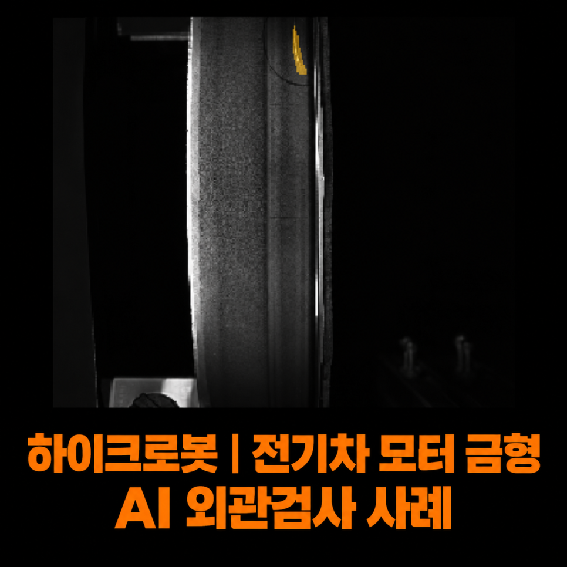
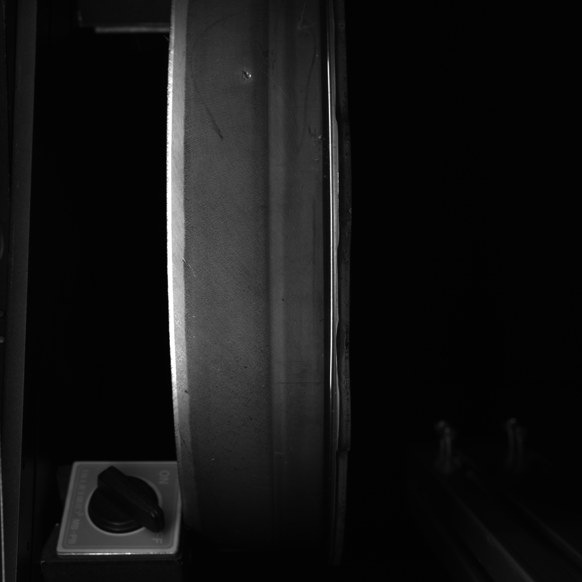
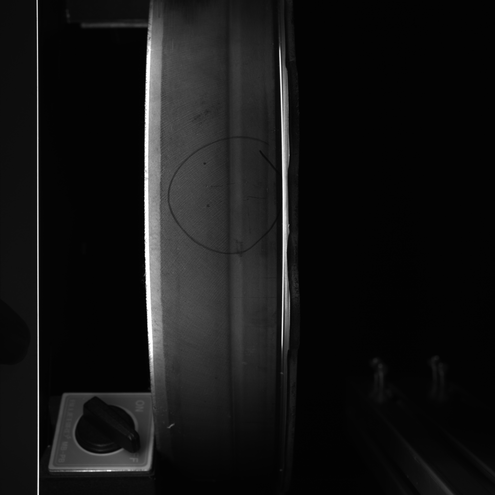
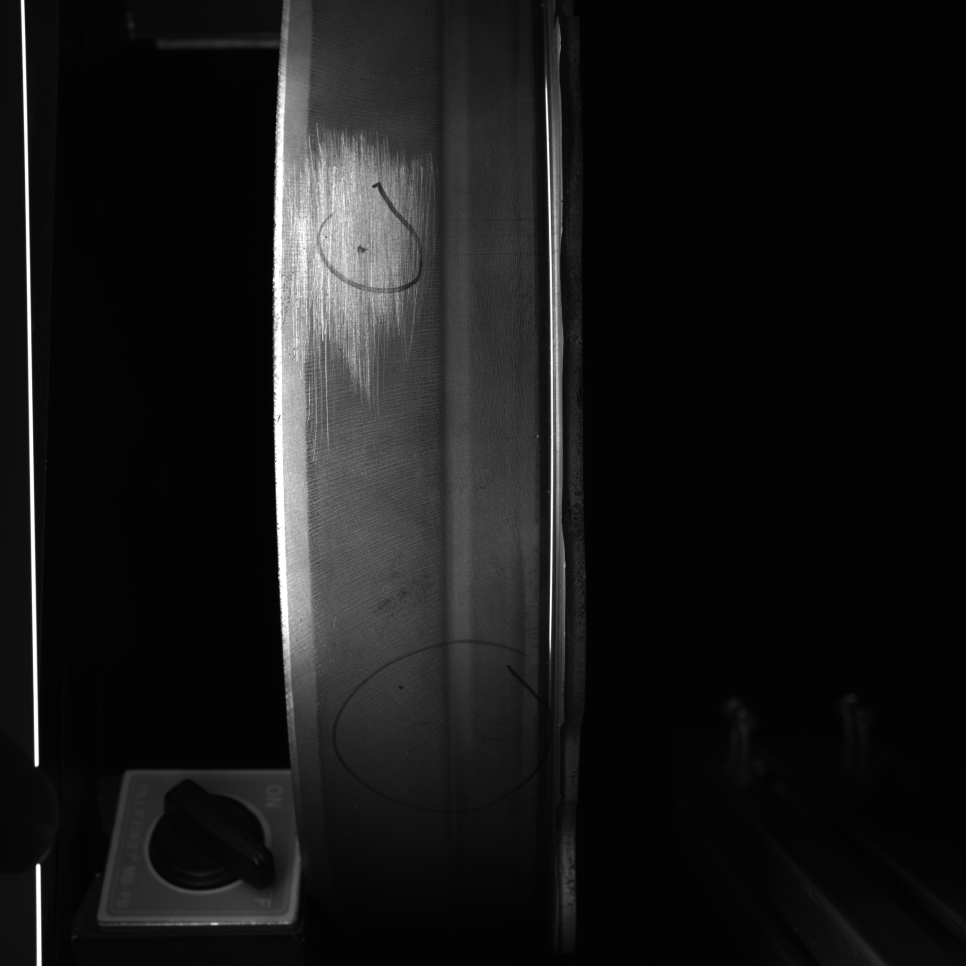
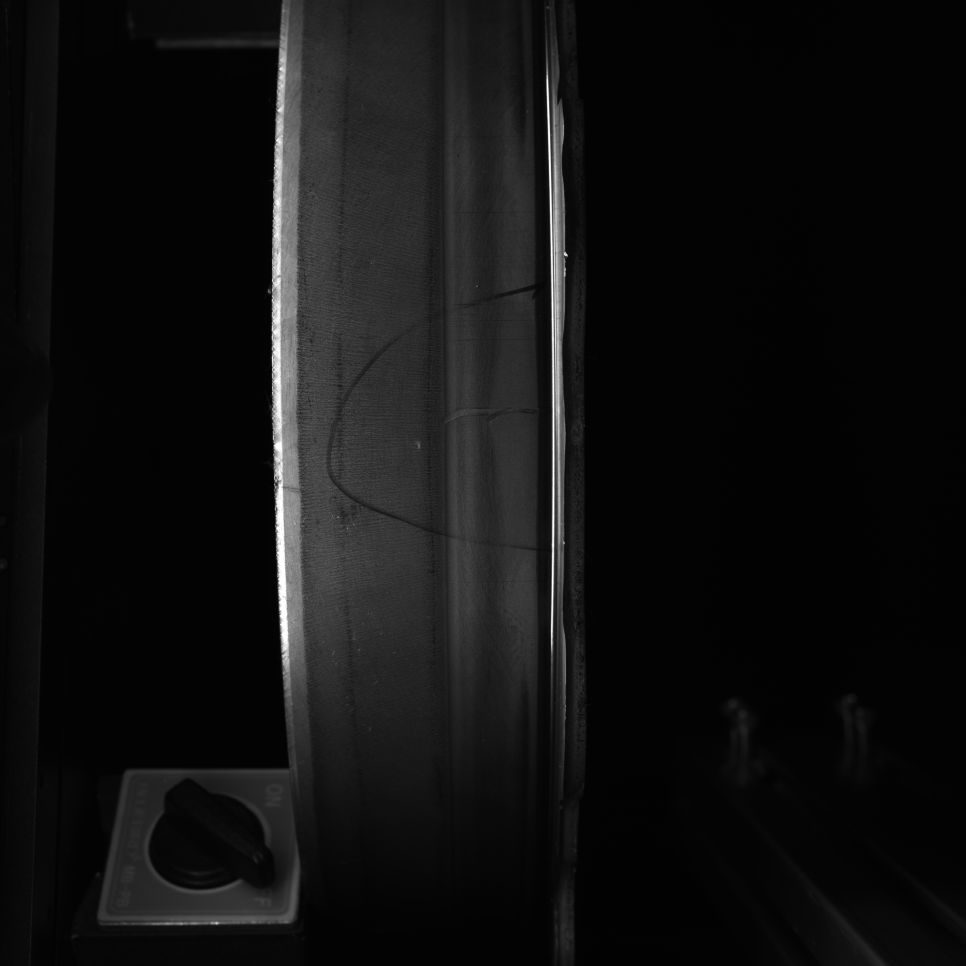
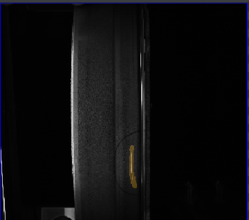
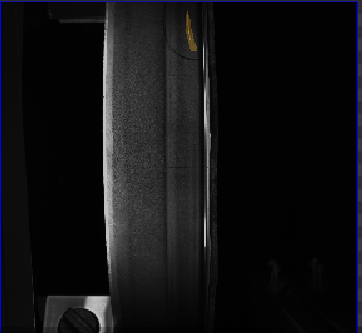
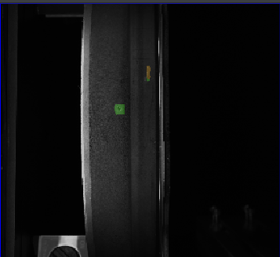
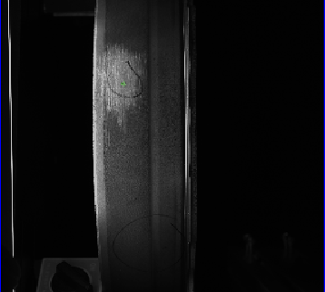
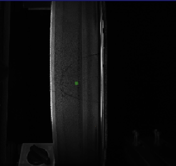

자동차 · 전기차 모터 · AI 비전검사
전기차 모터 금형 AI 외관검사 시스템 사례
2D 머신비전 카메라 4대
원형 금형의 반사와 설치 공간을 고려해 2D 카메라 4대를 배치하고, AI 결함검사로 스크래치와 찍힘을 검사한 사례입니다. 기존 설비 내부에 검사 시스템을 구성했습니다.

Project Summary
프로젝트 핵심 구성
- 산업
- 자동차 · 전기차 모터
- 검사·자동화 대상
- 전기차 모터 금형 AI 외관검사
- 주요 기술
- 2D 머신비전 카메라 4대
- 적용 구분
- 프로젝트 사례
01 · Overview
프로젝트 개요
원형 금형의 반사와 설치 공간을 고려해 2D 카메라 4대를 배치하고, AI 결함검사로 스크래치와 찍힘을 검사한 사례입니다. 기존 설비 내부에 검사 시스템을 구성했습니다.
02 · Problem
프로젝트에서 해결해야 했던 문제
고객사는 프레스 공정에서 생산되는 전기차 모터 금형의 외관을 검사하고 있었습니다.
하지만 다음과 같은 어려움이 있었습니다.
금형 표면의 심한 난반사
원형 구조로 인한 시야 확보의 어려움
스크래치와 찍힘을 안정적으로 검출하기 어려움
작업자의 육안 검사 한계
별도의 검사라인을 설치하기 어려운 공간
특히 불량 제품이 출하될 경우에는 단순한 재작업으로 끝나는 것이 아니라 전량 선별 검사, 납기 지연, 품질 클레임, 위약금 발생까지 이어질 수 있어 매우 중요한 검사 공정이었습니다.
- 금속 난반사
- 원형 구조의 촬영 사각
- 기존 설비 내 설치
03 · System
검사·자동화 시스템 구성
원형 금형의 반사와 설치 공간을 고려해 2D 카메라 4대를 배치하고, AI 결함검사로 스크래치와 찍힘을 검사한 사례입니다. 기존 설비 내부에 검사 시스템을 구성했습니다.
광학 조건 확보
정상·불량 학습
스크래치·찍힘 검사

04 · Inspection
고객의 고민
고객사는 프레스 공정에서 생산되는 전기차 모터 금형의 외관을 검사하고 있었습니다.
하지만 다음과 같은 어려움이 있었습니다.
금형 표면의 심한 난반사
원형 구조로 인한 시야 확보의 어려움
스크래치와 찍힘을 안정적으로 검출하기 어려움
작업자의 육안 검사 한계
별도의 검사라인을 설치하기 어려운 공간
특히 불량 제품이 출하될 경우에는 단순한 재작업으로 끝나는 것이 아니라 전량 선별 검사, 납기 지연, 품질 클레임, 위약금 발생까지 이어질 수 있어 매우 중요한 검사 공정이었습니다.
05 · Inspection
가장 어려웠던 것은 검사 컨셉이었습니다
이번 프로젝트에서 가장 어려웠던 부분은 AI가 아니었습니다.
가장 중요한 것은 "어떻게 촬영할 것인가"였습니다.
전기차 모터 금형은
금속 재질
높은 반사율
원형 구조
라는 특성을 가지고 있기 때문에
조명을 잘못 선정하면 스크래치가 보이지 않고,
카메라 위치를 잘못 선정하면 제품 끝부분이 제대로 촬영되지 않는 문제가 발생합니다.
머신비전에서는 이러한 검사 컨셉을 설계하는 과정이 검사 성능을 결정하는 핵심 요소입니다.
06 · Inspection
라인스캔 대신 2D 머신비전으로 구축
이와 같은 검사에서는 라인스캔 카메라를 사용하는 경우가 많습니다.
하지만 라인스캔 시스템은
높은 구축 비용
복잡한 설치
유지보수 부담
이라는 단점도 함께 가지고 있습니다.
ASPEC은 고객의 예산과 설치 환경을 종합적으로 검토한 후
2D 머신비전 카메라 4대를 배치하는 방식을 제안하였습니다.
제품의 원형 구조를 고려하여 각 카메라가 서로 다른 영역을 촬영하도록 설계함으로써
라인스캔을 사용하지 않고도 필요한 검사 성능을 확보할 수 있었습니다.




07 · Inspection
광학 설계가 프로젝트의 핵심이었습니다
원형 금형은 가장자리로 갈수록 촬영 각도가 달라지기 때문에 동일한 조건으로는 스크래치와 찍힘을 모두 검출하기 어렵습니다.
ASPEC은 제품 형상과 설치 공간을 고려하여
카메라 위치
렌즈 선정
조명 종류
조사 각도
를 반복적으로 테스트하며 최적의 광학 조건을 설계하였습니다.
특히 설치 공간이 제한적인 환경에서도 스크래치와 찍힘이 가장 잘 드러날 수 있도록 광학 솔루션을 구성하여 안정적인 검사 영상을 확보하였습니다.





08 · Inspection
AI 결함검사로 스크래치와 찍힘 자동 검출
광학 조건을 확보한 후에는 AI 결함검사(Deep Learning Defect Detection)를 적용하였습니다.
스크래치와 찍힘은 형태가 일정하지 않기 때문에 일반 룰베이스 방식으로는 모든 경우를 대응하기 어렵습니다.
이번 프로젝트에서는 다양한 정상 제품과 불량 제품을 학습시켜
AI가
스크래치
찍힘
등 다양한 결함 형태를 자동으로 검출할 수 있도록 시스템을 구축하였습니다.
복잡한 검사 조건을 하나씩 설정하는 대신 AI가 실제 결함의 특징을 학습하여 높은 검출 성능을 확보하였습니다.
09 · Inspection
기존 생산라인을 그대로 활용
또 하나의 중요한 조건은 별도의 검사라인을 구축할 공간이 없었다는 점입니다.
ASPEC은 기존 생산라인을 최대한 변경하지 않고
기존 설비 내부에 머신비전 시스템을 설치하여 검사할 수 있도록 설계하였습니다.
생산 흐름을 유지하면서 자동 검사를 추가할 수 있었기 때문에 설비 변경에 따른 부담도 최소화할 수 있었습니다.
10 · Inspection
이번 프로젝트를 통해 고객이 얻은 효과
이번 시스템 구축으로 고객사는 다음과 같은 효과를 얻을 수 있었습니다.
✔ 전기차 모터 금형 외관 자동 검사
✔ 스크래치 및 찍힘 자동 검출
✔ AI 결함검사 적용
✔ 라인스캔 없이 2D 머신비전 구축
✔ 작업자의 육안 검사 최소화
✔ 기존 생산라인 활용
✔ 휴먼에러 감소
✔ 불량 제품 출하 방지
✔ 리콜 및 품질 클레임 예방
✔ 합리적인 구축 비용
11 · Inspection
ASPEC의 생각
머신비전 프로젝트는 단순히 AI를 적용한다고 성공하는 것이 아닙니다.
검사 대상의 형상, 재질, 난반사 특성, 설치 공간, 생산 방식까지 모두 고려하여 올바른 검사 컨셉을 설계하는 것이 가장 중요합니다.
이번 프로젝트는 광학 설계와 AI 결함검사를 효과적으로 조합하여, 고가의 라인스캔 시스템 없이도 고객이 요구하는 검사 성능을 확보한 대표적인 사례였습니다.
ASPEC은 자동차 및 전기차 부품, 반도체, 제약·바이오, 식품, 전자부품 등 다양한 산업 분야에서 머신비전과 AI 비전검사 프로젝트를 수행하며 축적한 경험을 바탕으로 고객의 생산 환경에 가장 적합한 솔루션을 제안하고 있습니다.
Operation
현장 적용과 운영 조건
원형 금형의 반사와 설치 공간을 고려해 2D 카메라 4대를 배치하고, AI 결함검사로 스크래치와 찍힘을 검사한 사례입니다. 기존 설비 내부에 검사 시스템을 구성했습니다.
- 금속 난반사
- 원형 구조의 촬영 사각
- 기존 설비 내 설치
Result
적용 효과
- 전기차 모터 금형 외관 자동 검사
- 스크래치 및 찍힘 자동 검출
- AI 결함검사 적용
- 라인스캔 없이 2D 머신비전 구축
- 작업자의 육안 검사 최소화
- 기존 생산라인 활용
- 휴먼에러 감소
- 불량 제품 출하 방지
- 리콜 및 품질 클레임 예방
- 합리적인 구축 비용
Engineering
ASPEC의 머신비전 시스템 설계 방식
검사 대상의 재질과 형상, 설치 공간과 생산 조건에 맞춰 장비·광학·소프트웨어와 설비 연동을 함께 검토합니다.
- 금속 난반사
- 원형 구조의 촬영 사각
- 기존 설비 내 설치
08 · Related Cases
관련 구축사례
비슷한 공정의 자동화를 검토하고 계신가요?
검사 대상과 불량 샘플, 설치 공간, 택타임을 알려주시면 적용 구성을 검토해 드립니다.